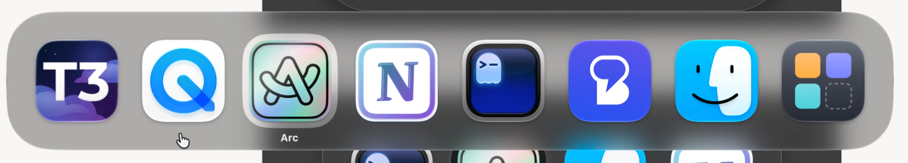

Altty actuel Reconstitution
Verre gris, contour sombre. Sélection noire à 45 %, sans halo ajouté.
Référence dark corrigée avec ta capture : sélection blanche et verre translucide. Les mockups gardent la même taille et les mêmes icônes. Le fond mixte reproduit une fenêtre sombre sur une page claire.

Verre gris, contour sombre. Sélection noire à 45 %, sans halo ajouté.
Gris légèrement plus sombre, liseré clair. Sélection graphite à bord doux.
Liseré clair fin, gris rapproché du natif et halo gris très discret autour de la sélection.
Verre teinté de noir à 20 % dans le code actuel ; sélection noire à 50 %, sans halo blanc.
Halo blanc large autour d’Arc. Le verre devient clair sur le fond blanc et sombre au-dessus de la fenêtre.
Halo blanc comme ta référence, liseré clair et verre translucide sans assombrissement artificiel ajouté au mockup.
Reconstitutions HTML à partir des captures et du code actuel. Le fond mixte est simplifié, et les variations du verre sont simulées. Les valeurs exactes de teinte et d’opacité du natif restent à mesurer.